What a long-running notebook of experiments on CA.CollatzStep actually established — the automaton itself, the statistics of its rows, the pattern algebra of its bulk, and the machines that can and cannot be built in it.
Four different systems live in this repo and they answer different questions. Mixing them up cost this project weeks, so every claim below is tagged with the model it was measured in. A result in one model is not a fact about another.
3n+1 with the
LeastEdge stripping trailing zeros on the LSB side.ca-mul3.js). The correct local
physics deep inside a giant number, where the halving is far away. Valid about
×3; not about Collatz globally.2W or
2W−1). Lossy: the wrap can manufacture artifacts, and one
famous one is retracted at the bottom of this page.Orientation throughout: the most significant bit is on the LEFT.
Numbers grow leftward at log₂3 ≈ 1.585 bits per odd step; the
LeastEdge consumes on the right.
CA.CollatzStep renders one odd Collatz step per display row: multiply by
three, add one, then strip all trailing zeros. The Python port
tools/collatz_real.py is verified cell-for-cell against the JS module; seed 27
gives the rows 27, 41, 31, 47, 71, 107, 161, 121, 91, 137, …
[real-CA]
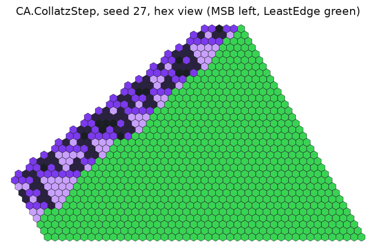
The causal time slices of this automaton are the antidiagonals
t = r + c, not the rows. The carry crosses those slices, so the interior state
is two bits per cell: (digit, carry). The six display tiles are
0, 0+, 1, 1+, null (beyond the
MSB) and LeastEdge. The digit update is XOR (linear over GF(2)); the carry update is
a majority gate, which is genuinely nonlinear — the reason arguments from
the linearity of x → 3x do not transfer to this machine.
[real-CA]
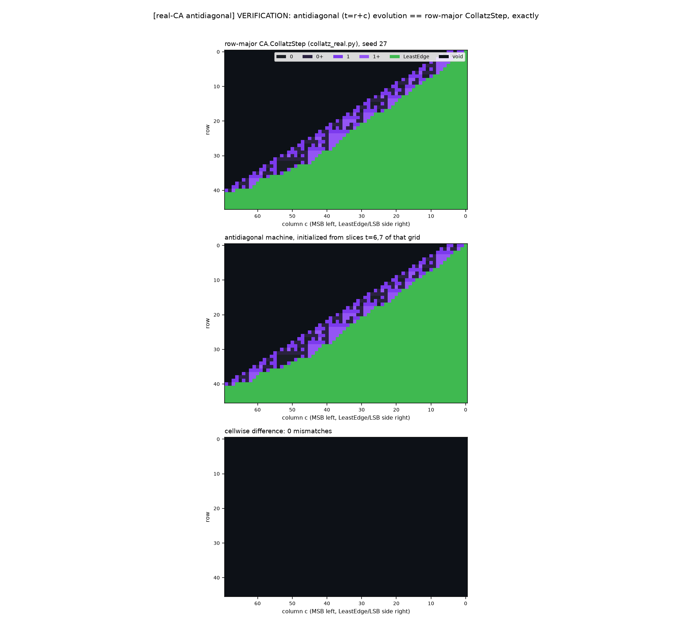
(digit, carry) machine started from slices
t = 6, 7 of that same grid, and the cellwise difference — 0
mismatches. The antidiagonal frame is the real state space, and it reproduces the
display exactly. images/collatz-offshell-verify.pngThe MSB edge advances at log₂3 = 1.585 bits per odd step; the LeastEdge
consumes at the mean halving count v̄ per step. Net growth is
1.585 − v̄. Measured on the real automaton: all-ones
250−1 gives v̄ = 1.824, random numbers
1.984, sparse numbers 2.046. Consumption always wins, so every
number tested shrinks to 1 — and the one property that predicts how slowly is the
density of 1s. [real-CA]
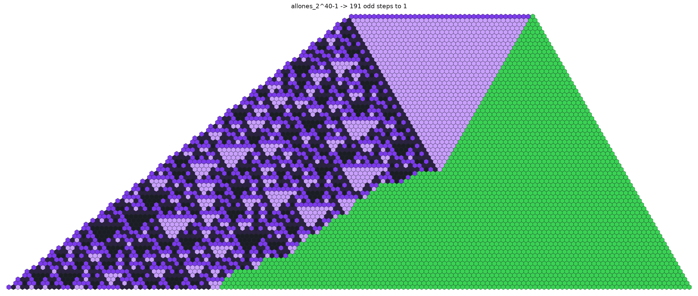
240−1, 191 odd steps to 1. Top right: a
solid light-purple climb region where nearly every step halves only once. Left: the
Sierpinski-like carry texture of the growing MSB front. Right: the green LeastEdge eating
the number away. A same-length sparse seed takes 56 steps, a random one 119.
images/collatz-hex-allones_240-1.pngThe wall, stated honestly: a structure that sustained
v̄ < log₂3 forever would be a divergent trajectory. That is the
open Collatz problem itself, and nothing on this page claims to have crossed it.
Plot total stopping time against input and the picture is full of structure. Every layer of it turned out to be explainable — which means it is telling you about the coordinate system, not about Collatz. The programme was to name each layer and remove it. [value]
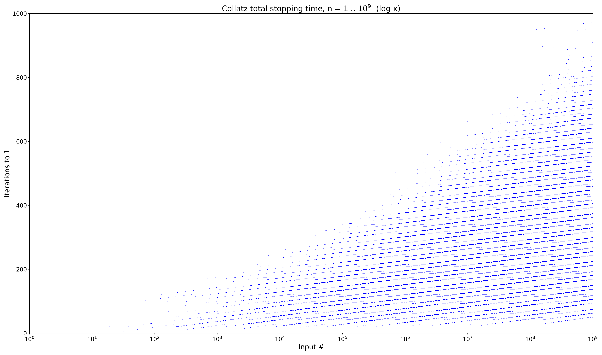
n = 1 … 109 with a logarithmic x
axis. Inputs are generated multiplicatively, so log x is the right axis: the cloud becomes
a linear fan of dashes with a straight upper edge of record holders. Longest trajectory in
range: 986 steps. images/collatz-log-x-1e9.pnga halvings and
b triplings; landing on 1 needs 2a ≈ n·3b,
so one (a, b) pair only works for n in a narrow window. A dash spans a
factor of 1.25 in n at every scale; at fixed step count dashes
repeat every ×6 (one tripling traded for one halving); at fixed
n step counts are quantised by 1 + log₂3 ≈ 2.585.(Δa, Δb). The steep families exist because
23 ≈ 32, and the whole ladder of steepnesses is the
continued fraction of log₂3 — 3/2, 8/5, 19/12, 65/41, 84/53 — each a better
near-miss producing a fainter, steeper family. This is the quasicrystal.b = (s − log₂n)/(1 + log₂3)
and it recovers the true tripling count exactly (100.00% on 4000 random
n < 107).b grows 2.4008 per doubling of
n against the theoretical 1/log₂(4/3) = 2.4094. Subtract the
trend, divide by √log₂n, and five decades collapse onto one
distribution: sd 5.19, 5.08, 4.99, 5.01, 5.04. The √log n scaling says the
residual is a random walk in disguise; it is right-skewed, and no closed-form law has been
fitted to it.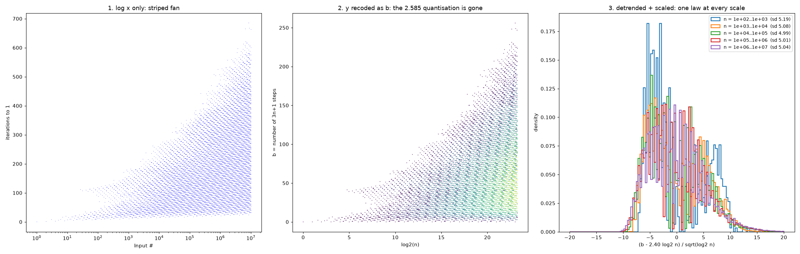
y recoded as
the tripling count b against log₂n — the 2.585 quantisation
is gone. Right: detrended and divided by √log₂n, five decades from
102 to 107 land on the same right-skewed
distribution (sd 5.19 → 5.04).
images/collatz-transforms.pngA further shear, x″ = 1.934·log₂n + 0.0657·s,
is exactly the integer 2a − 3b, which turns the plot into evenly spaced
columns whose interiors are perfect ladders. Collapsing all columns onto one lands back on the
detrended residual, agreeing to five decimal places — two independent routes to the same
object. [value]
Deep inside an absurdly large number the halving is far away and invisible; locally the rule
is multiplication by three with carries. That is a genuine, different automaton, and it has a
complete theory. Two things make it more than a toy: the void beyond the real automaton's MSB
provably runs pure ×3 until the host front absorbs it
[real-CA], so this algebra is the physics of that
sector; and everything below is exact.
[x3-bulk]
A spatially periodic state of period p with cell value X is the
repeating binary expansion of r = X/(2p−1), and
X → 3X is just r → 3r. Writing r = a/d in
lowest terms gives all three numbers at once: the pattern is persistent iff
3 ∤ d, its spatial period is ordd(2) and its
temporal period is ordd(3). "Which structures exist" becomes a
catalogue rather than a search. [x3-bulk]
Superposing two patterns always works (denominators go to the lcm). Laying blocks
side by side has a real compatibility condition, and it is a congruence. With the
3-adic quota qn = v₃(2n−1), two width-L
blocks compose iff
A ≡ B (mod 3^q2L), q2L = v₃(22L − 1)so compatibility is an equivalence relation: every persistent block carries a
charge, and two blocks compose exactly when their charges match. Verified
exhaustively for L ≤ 7, k ≤ 4. When the quotas agree there is
one class and everything composes with everything.
[x3-bulk]
| L | blocks | charges | pairs that compose |
|---|---|---|---|
| 5 | 32 | 3 | 33.4% |
| 6 | 8 | 1 | 100% |
| 7 | 128 | 3 | 33.3% |
| 9 | 512 | 27 | 3.7% |
| 12 | 456 | 1 | 100% |
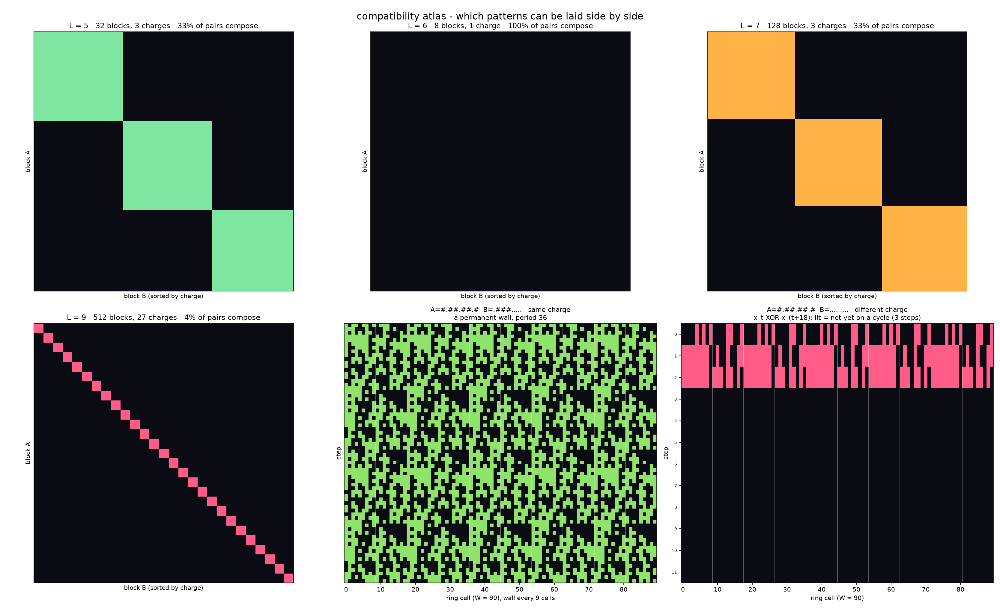
L = 6, 27 tiny classes at L = 9). Bottom middle: a matched-charge
pair forming a permanent standing domain wall, period 36, that never
erodes. Bottom right: a mismatched pair burning off its 3-part in three steps and landing on
a different orbit. images/collatz-atlas.pngExtending past pairs, the law becomes a signed 3-adic accounting: debt only lives on even
window widths, strict triples (ABC legal while every pair is illegal) exist
exactly for odd L, and at k = 4 the condition is an
alternating sum — so the order of the blocks matters, and palindromes such as
ABBA can rescue a forbidden pair. Machine-flavoured: parts that only work in the
right order. [x3-bulk]
A word can persist forever and still lose everything about its parts. Splitting a word into
background plus defect field shows where the blow-up comes from: the background contributes
exactly the part's own period, and every bit of the excess is the defect. Call a word a
true composition when its period divides the lcm of its distinct blocks' periods —
no new frequencies. Exhaustively: at L = 5 and L = 7 every
genuine two-block word composes truly (310/310 and 5334/5334), at k = 3
only ABC survives (180 of 32730; 6090 of 2097018), and
AkB for k ≥ 3 never composes truly at
any L ≤ 16 — repetition is exactly what lets the defect reach the primitive
prime divisors of 2kL−1.
[x3-bulk]
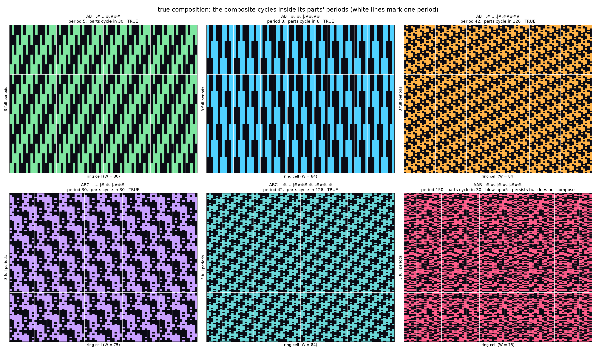
AB words cycling in 5, 3 and 42 while their parts cycle in 30, 6 and 126, and
two ABC words — and, bottom right, an AAB word whose period blows
up five-fold to 150: it persists, but nothing of A survives into it.
images/collatz-truecomp.pngA crystal with denominator d translates rigidly iff
3 ≡ 2k (mod d): after one step the pattern is exactly itself,
shifted by k cells, with no dispersion. 58 denominators below 400 do this, and
several move toward the MSB — d = 13 at 4 cells/step,
d = 29 at 5, d = 61 at 6. These are shift eigenvectors of the
×3 map, not perturbations.
[x3-bulk]
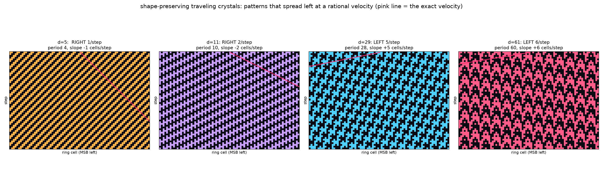
d = 5 shifts right 1 cell/step, d = 11 right
2, d = 29 left 5, d = 61 left 6.
The shape is preserved exactly, step after step.
images/collatz-traveling.pngHonest negative. A localized left-moving glider — a bounded
packet travelling against a crystal ether, the Rule-110 building block — was searched for
properly and not found: 262,143 localized (digit, carry) seeds on vacuum, 142
spatially and temporally periodic ethers, and more than 1.3 million defects placed
exhaustively on the 40 most structured of them. Every defect either dies or grows past 40
cells within at most 77 steps. Zero gliders.
[x3-bulk]
This is a search result in the ×3-with-carry
model under a free MSB and a looping right edge — where there are no trailing zeros
to eat, so no consumption exists to balance the growth. It is not a theorem about
CA.CollatzStep. The earlier claim that localized left-movers were "provably impossible" is
retracted below: that proof used the linearity of
x → 3x, and the real carry is a majority gate.
The same negative, in one sentence: the bulk supports storage — regions that remember a state indefinitely — but not signals, because a domain wall disperses at the same rate as a single-bit defect. Storage without communication is the one combination that cannot be assembled into a machine. [x3-bulk]
The half machine is the configuration where the right (LSB) side loops and the left (MSB) edge is free to grow. One edge loops, one does not — a full cycle with both edges closed is a different, and excluded, object. Looping the right side is a lens: it says "we are in the middle of a giant number", not "we are doing modular arithmetic".
Give a crystal back its MSB edge but keep the right side looping and the configuration is a
real number: an integer head H plus a repeating binary fraction
f = X/(2p−1). One step sends
X → 3X mod (2p−1) and H → 3H + q, so the
whole configuration at time t is 3tf₀ written in
binary. Three consequences, all measured:
[x3-bulk]
t·log₂3 + log₂(a/d). The
slope is universal — ten crystals measured, all 1.5848–1.5852 — and the pattern
sets only the offset, exactly: H/3t → a/d verified to twelve
digits. Different patterns give parallel lines that never cross.log₂3 — measured 1.5854, 1.5870, 1.5832
cells/step. Looping the right edge was the necessary move.a/d: the head is a crystal too, just rendered in the wrong base.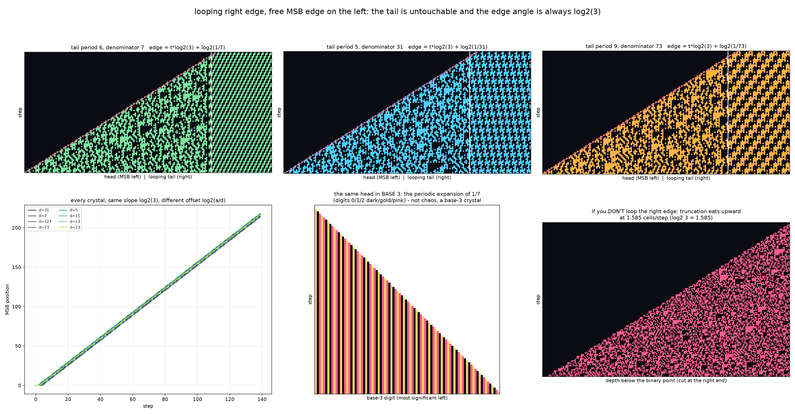
log₂3. Bottom middle: the same head drawn in base 3 — the periodic
expansion of 1/7, a crystal, not chaos. Bottom right: what happens if you don't
loop the right edge — truncation eats upward at 1.585 cells/step.
images/collatz-halfopen.pngThat also settles why this machine cannot close a loop by itself: the edge angle is
log₂3 for every configuration of this kind, so it is irrational no
matter what you put in the tail, and an irrational edge angle never returns to where it
started. [x3-bulk]
On the real automaton the interface behaves like a player piano. Prescribe a periodic halving
rhythm (v₁ … vl) with sum S. Every such
rhythm has a rational runner
n* = C / (2S − 3l), C = Σj 3l−1−j 2v₁+…+vjand a tape performs that rhythm for a number of steps fixed exactly by how far it agrees with
the runner 2-adically. With A = v₂(n − n*) the number of low bits of
agreement, the rhythm runs precisely
D(A) = min{ j : Sj + vj+1 ≥ A } steps. Zero exceptions in
640,000 trials plus an independent check, and the seeds sustaining a given v-prefix
form exactly one residue class mod 2S+1. The overshoot past the designed
region is not luck either — it is fair-coin geometric,
P(A − m ≥ j) = 2−j, because the free high bits happen to
match the runner's next 2-adic digits or they do not.
[value]
log₂3 − 1 = 0.585 < 1 — so a fuse can never pay for its own
replacement. There is no bootstrap.
[value]
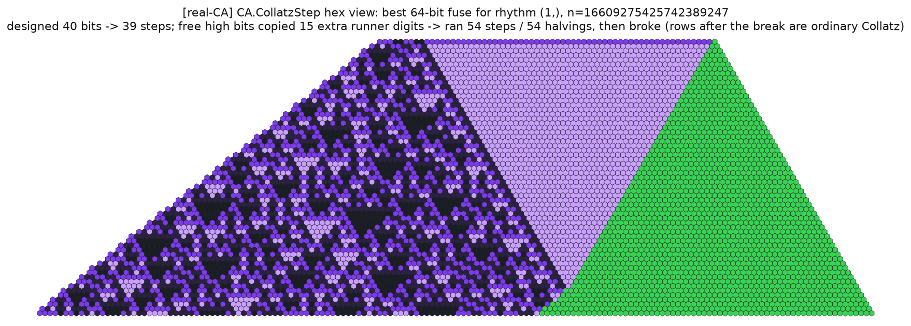
(1),
n = 16609275425742389247. Forty designed bits buy 39 guaranteed steps; the free
high bits happened to reproduce 15 further runner digits, so it ran 54 steps at one halving
each before breaking. Left of the break the climb is the smooth light-purple wedge; after it
the rows are ordinary Collatz again.
images/collatz-runners-hex.pngThe rhythm is a real readout of spatial structure. A crystal tail of width L is
consumed to an exactly periodic beat equal, step for step, to the odd-map orbit of the 2-adic
rational −A/(2L−1) — 180 of 180 crystals, against an
autocorrelation of 0.71±0.16 for crystals versus 0.21±0.04 for random tails
(Cohen's d = 4.9). A block boundary is audible to the bit: over 1888 composed pairs
the beat diverges from the pure-A ideal exactly when the halving window pokes past
the interface (median +1 bit, 1404/1404 blind changepoints at the predicted step).
[real-CA]
Honest negative. The ×3 charge —
the quantity that decides composability in the bulk atlas — has no measurable effect
on the LeastEdge rhythm, the consumption rate, or the recovery time, across roughly 2400 runs
and three geometries (|d| ≤ 0.1 everywhere). Charge is void physics, not
interface physics. What destroys structure at a domain wall is a universal wedge of disorder
radiating MSB-ward at about log₂3 bits per step, and its size,
not the charge, sets how long the rhythm stays disordered.
[real-CA]
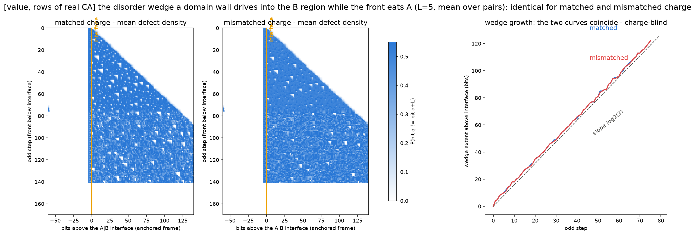
B region while the front eats
A. Left and middle: mean defect density above the interface for matched and for
mismatched charge — visually the same triangle. Right: the two wedge-growth curves plotted
together; they lie on top of each other and follow the dashed log₂3 line.
Charge-blind. images/collatz-bridge-wedge.pngGiven all of the above, what can be constructed? Four things, each honest about its model.
Pick a crystal tile T divisible by 3r. The seed
s = T/3r is a smaller number whose orbit grows leftward
into perfect crystal: after r steps the crystal extends about
1.585·r columns past the seed's initial MSB. A deep search over random
same-size seeds found nothing else that does this — the bloom family is constructive. The
growth is prepaid: r bloom steps cost roughly 3r of tape.
[real-CA void sector]
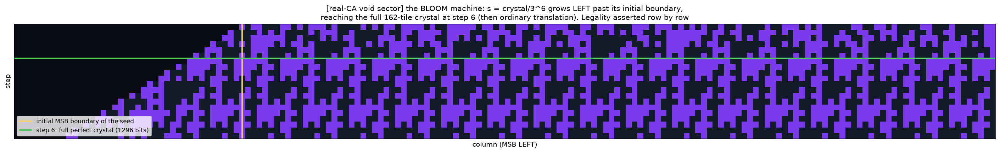
An exhaustive leaderboard over every pattern up to L = 14, ranked by survival per
tape bit (the reciprocal mean halving of its ideal cycle), makes all-ones the provable champion
at one step per bit; the best non-trivial machines reach about 0.52. Lifetime is then linear in
the number of tiles you are willing to pay for — which is the fuse law wearing a different hat.
[real-CA]
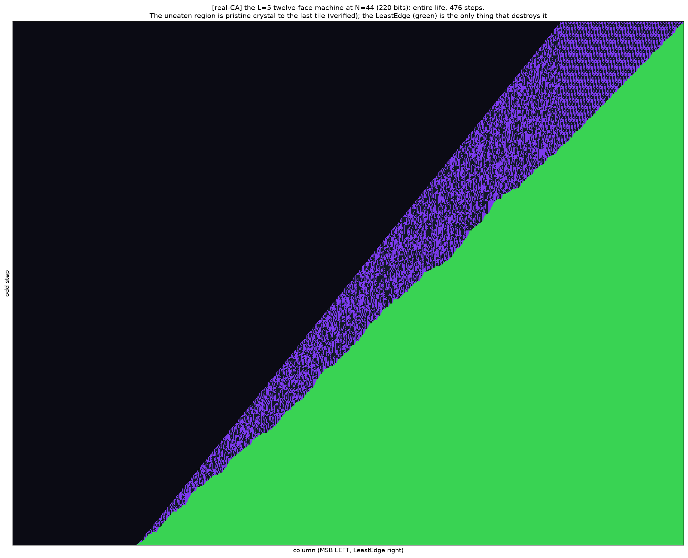
L = 5 twelve-face machine at N = 44 (220 bits) over its entire
life, 476 odd steps. MSB left, LeastEdge right. The narrow purple band is the machine,
pinched between black void on the left and the advancing green LeastEdge on the right; the
uneaten part stays pristine crystal to the last tile, and the LeastEdge is the only thing
that ever destroys it. images/collatz-bigsurvivor.pngStack |A…A|B and the raw spacetime drifts diagonally, hiding the
structure. Align every row on the LeastEdge front instead — the machine's own frame — and the
behaviour is literally periodic, with the two blocks running different programs and a visible
handoff between them. [real-CA]
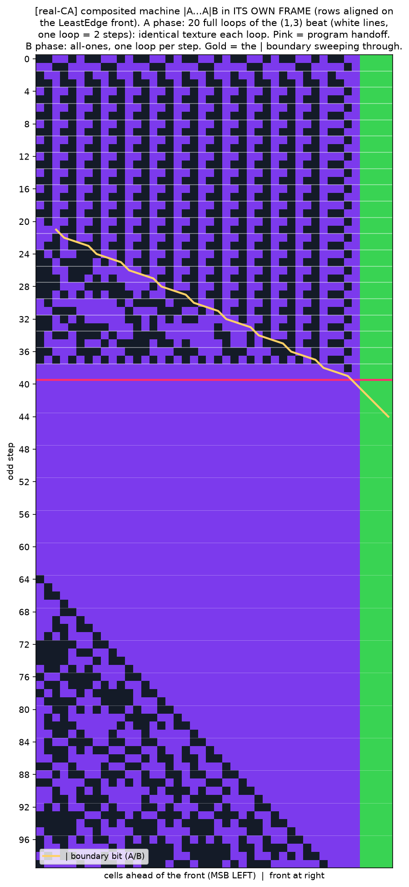
|A…A|B with rows aligned on the LeastEdge front (green column, right).
In the A phase each loop is 2 steps of the (1,3) beat and the texture ahead of
the front repeats identically — 20 full loops, white lines marking them. The gold trace is
the | boundary bit drifting toward the front; the red line is the handoff, after
which the all-ones B phase runs one loop per row.
images/collatz-composed-loop.pngLoop the MSB as well and the survivors stop dying. This is a ring model — a periodic window, with no free growing edge — so nothing here is a statement about a finite number under the real automaton; it is a statement about what the pattern algebra allows when nothing can leak out.
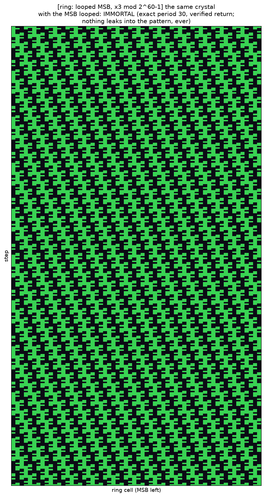
The lego crystal answers the composition question constructively. Width-6 bricks with
v₃ ≥ 2 all share a single charge class, so every assembly of
them persists: A = 010010, B = 101101 and a wall
| = 111111 build the unit cell |A|B|, tiled four times on a 96-cell
ring. Every one of the 480 rendered rows is a perfect period-24 crystal and the state returns
exactly after 240 steps. Rebuild them as |A|A|B| or |A|B|B| and those
persist too, at period 108 on their rings — the bricks really are legos.
[ring: looped MSB, x3]
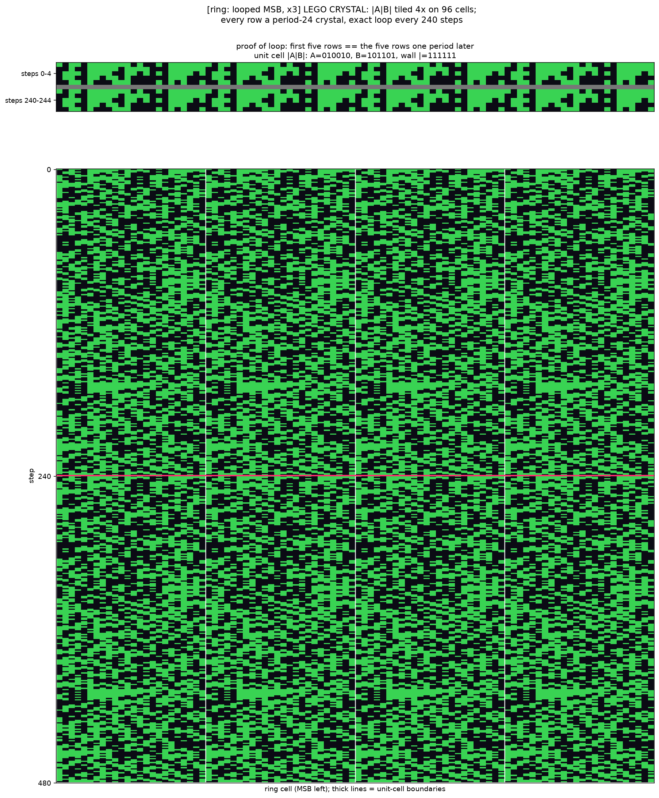
|A|B| unit-cell boundaries and a red line at step 240 where the state returns.
The two bricks keep their own textures inside every cell.
images/collatz-lego.pngThe protocol assembled from everything above: a right edge that blocks consumption (an
all-ones tape, v = 1 guaranteed), a left edge that preserves its cargo bits during
the climb, and a search over the cargo for a lucky fall. Run for real — about six hours of
hunting on 16 cores plus a seven-minute certification sweep — it produced two kinds of monster,
both verified exactly in Python with no floating point and no modular window.
[value]
n = 2K − 1 with K = 220 = 1,048,576
bits: 5,044,234 odd steps exactly, about 12.9 million steps counting halvings,
peak size 1,661,954 bits, twenty minutes of exact bignum arithmetic. The fuse law predicted a
1,048,575-step climb to 1,661,993 peak bits and ~5.05M total steps — agreement to
0.1%. This scales linearly in K with no ceiling, so an "absolute
record" here is a purchasing decision rather than a search.
[value]
Classes n = (m << (j+1)) − 1 leave exactly 31 free cargo bits, so
each class is only 230 wide and could be swept exhaustively. A
~290×109-trial random hunt and a deterministic sweep of every single
m returned the same three champions: these are class maxima, proved, not
lucky draws. Cross-check on coverage: the exhaustive sweep found 5485 seeds in the 80/48 class
exceeding 2125 and the random hunt had logged exactly 5485 distinct
such seeds; all 5485 were rerun at 512-bit precision and the best reached 729 odd steps, below
the champion. Nothing hid in the discards.
[value]
| class | n | odd steps | delay | peak bits | odd/bit |
|---|---|---|---|---|---|
| 48/16 | 268726926180351 | 581 | 1550 | 62 | 12.10 |
| 64/32 | 12503150712101797887 | 710 | 1899 | 86 | 11.09 |
| 80/48 | 1188923081869663116722175 | 868 | 2324 | 113 | 10.85 |
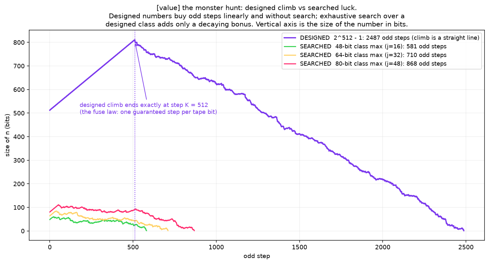
n in bits.
The designed 2512−1 climbs as a dead-straight line that ends
exactly at step K = 512 — one guaranteed step per tape bit — then descends over
2487 odd steps. The three exhaustively-proved class champions (581, 710 and 868 odd steps)
are the small curves along the bottom.
images/collatz-monster.pngln(effort) and only at small size.
Every blocker the protocol predicted held quantitatively.
[value]
The notebook keeps its mistakes on purpose: most of them were vocabulary or model substitutions, and each one has a corrected replacement. Nothing in this section should be cited as a current result.
RETRACTED The block-of-ones fixed point. The claim
that n = 2W−1−1 is a zero-halving fixed point that stops
LSB progression was an artifact of modelling "loop the MSB" as
mod (2W−1), whose end-around carry folds MSB overflow back onto
the LSB. That wrap is number theory, not the automaton.
[ring]
Corrected: under real 3n+1 an all-ones block is not stable at all — it
sheds one bit per step for about k steps while its pattern morphs completely.
In the 2-adic limit …1111 = −1 genuinely is fixed, at exactly one
halving per step (the slowest a nonzero pattern can go), but that is an infinite object and
not a legal finite pattern. There is no finite fixed all-ones structure.
RETRACTED "Unit cells must be uniform textures."
False, and it was only a too-small search: AAB, ABBA and
AABB sectionings exist, and the charge law says exactly
which ones. [x3-bulk]
RETRACTED "No localized left-mover, provably." The
proof used the linearity of x → 3x, which is the bulk/value map, not the
cellular automaton. In the real (digit, carry) state the carry update is a
majority gate and is nonlinear, so the dispersion argument does not apply and gliders are
possible in principle. The negative that survives is a search result in
×3-with-carry, stated as such
above. [x3-bulk]
MIS-SCOPED "Crystals are not special." True of
finite-seed stopping times — crystal seeds descend in as many steps as random numbers of the
same 1-density [real-CA] — but it was over-read into
"the whole pattern zoo was an artifact". Finite-seed statistics do not probe bulk-interior
structure, and the void sector later showed that digit patterns beyond the MSB run pure
×3 inside the real automaton until absorbed. The atlas is genuine physics
of that sector, and invalid as a claim about global Collatz behaviour.
MIS-SCOPED "Charge is carry content." A natural
conjecture, dead at the interface: charge never registers in the LeastEdge rhythm
(|d| ≤ 0.1). It is a void/persistence quantity only.
[real-CA]
The four recurring process errors behind all of these: substituting a tractable proxy for the real automaton and calling the result impossible; treating display rows as the machine state (which erases the carry field); drawing the MSB on the right, so growth appears to run the wrong way; and translating "loop a side" into a modulus, which imports arithmetic artifacts that have nothing to do with the automaton. Conclusions that depend on the wrap are invalid by construction.